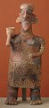

|  |
Pacific Coast region (Mexico), |
 |
Large, hollow statuettes like this standing figure come from the west coast of Mexico, an area comprising the modern states of Nayarit, Jalisco, and Colima. Two thousand years ago, at the base of the mountain range called the Sierra Madre, early Indian people lived and farmed here in small, scattered villages governed by local chiefs.
The ceramic figures were buried in a distinctive type of shaft- chamber tomb found only in this part of Mexico. A vertical shaft, 3 to 52 feet deep, opened into one or more chambers, each of which could contain multiple burials. These tombs were places of honor, reserved for local rulers or ARISTOCRATS and their families. They were furnished with offerings of clay figures, musical instruments, jewelry, slate mirrors, and shells—familiar objects included to accompany the dead on their journey into the afterlife. Figures and SCULPTURAL GROUPS, both large and small, provided lively depictions of people going about their daily activities: playing music, wearing armor, grinding corn, tending children, and eating meals.
The mountains formed a natural barrier that isolated this region from the rest of the country. The West Coast people led simple lives, developing none of the sophisticated writing, grand temple complexes, and large-scale stone sculptures that prompted interest in urban pre-Columbian cultures. For this reason, study of these smaller, simpler objects only began within the last hundred years.

Key ideas.
Where does it come from?
What does it look like?
How was it used?
How was it made?
Discussion questions.
Additional resources.
Select another piece.